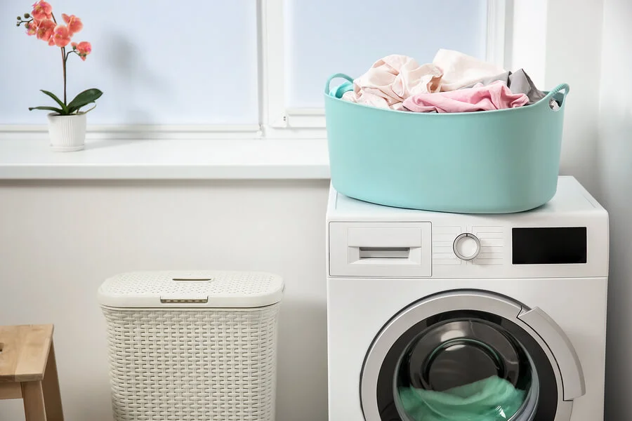
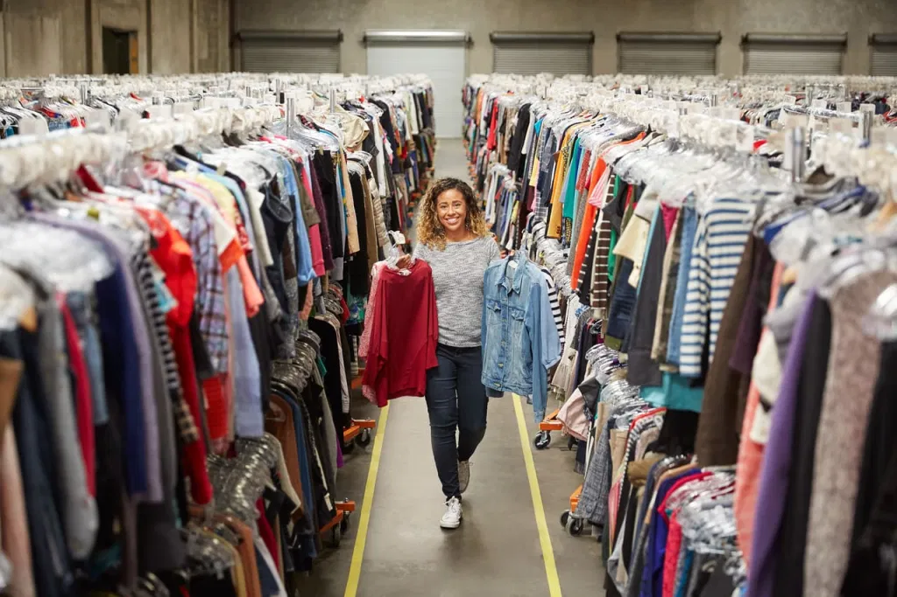

Servicio de Lavandería
Realice el lavando de su ropa con nosotros, para el cuidado adecuado de todas sus prendas más preciadas. Entrega a domicilio.
Servicio de Reparación de prendas

Reparación de prendas con tintura y/o costura, para darle ¡nueva vida a la ropa que más ama! Recibimos prendas que ya no quiera conservar. Entregas a domicilio
Servicio de Venta de ropa
Venta de ropa usada, que se encuentra renovada. Conozca todas las ofertas a través de la plataforma. Entregas a domicilio.
Los trucos para tender la ropa sin dejarle marcas
Cuando se hace la colada y hay que secar la ropa, en ocasiones se hace de forma inapropiada. El resultado al recogerla es que tiene marcas de dobleces o de la cuerda del tendedero, que son difíciles de eliminar incluso con la plancha. Pero esto tiene una simple y barata solución. Solo siguiendo éstos sencillos trucos...
Consultar articulo
¿Has quemado la ropa planchando o te han aparecido brillos?
¿Te ha ocurrido alguna vez que al planchar una camisa oscura han aparecido unos espantosos brillos? O ¿te has puesto al teléfono mientras planchabas y al volver tu ropa se ha quemado? Si te ha ocurrido algo así durante alguno de tus planchados, toma nota a estos remedios caseros para solucionarlo y que tu ropa vuelva a lucir perfecta.
Consultar articulo
No es necesario lavar la ropa luego de regresar de la calle
El doctor Elmer Huerta responde por qué la dexametasoma no se debe consumir como medida de prevención contra el coronavirus, explicamos si una persona puede presentar covid-19 en más de una oportunidad y si sirve lavar la ropa luego de salir a la calle para evitar el contagio con la enfermedad..
Consultar articuloCómo dar una segunda vida a una chaqueta transformándola en un bolso
Luis López-Aranguren, responsable de diseño y patronaje de Altrapo Lab, nos ha enseñado a transformar una chaqueta en un bolso. Este experto impartió de forma reciente un taller en la Maratón de Reciclaje Textil Creativo de La Casa Encendida sobre cómo reutilizar prendas de ropa vieja para convertirlas en piezas nuevas, una tendencia denominada upcycling, también conocida como reciclaje creativo.
Consultar articuloGrupo 160
Lorena Valencia
Diseñadora Visual, estudiante de ADSI me encanta andar en bici, escalar, leer y viajar.
Juan Saenz
Ingeniero Químico y estudiante de Ingeniería de Sistemas, me gusta leer, montar en bici, salir a caminar y comer.
Carolina Motta
Ingeniera Mecatrónica que ama inventar, bailar, oir música, jugar basketball y viajar.
Maria Aparicio
Estudiante de Ingeniería de Sistemas como pasatiempo me gustan los juegos mentales, escuchar música y viajar.